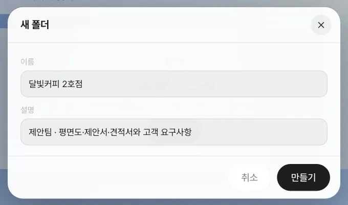
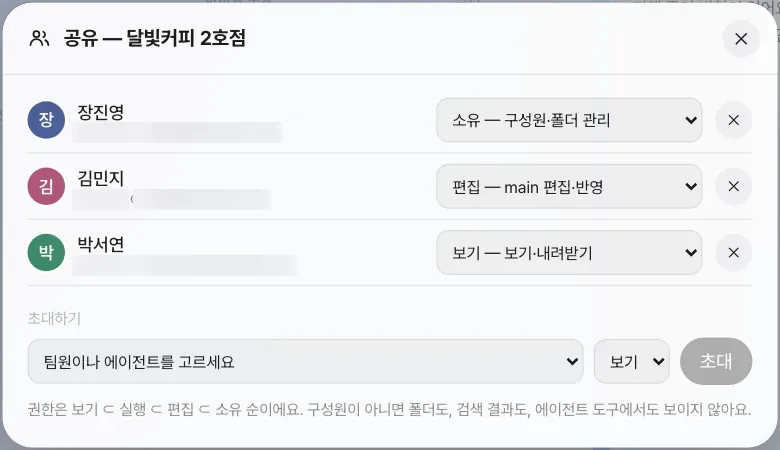
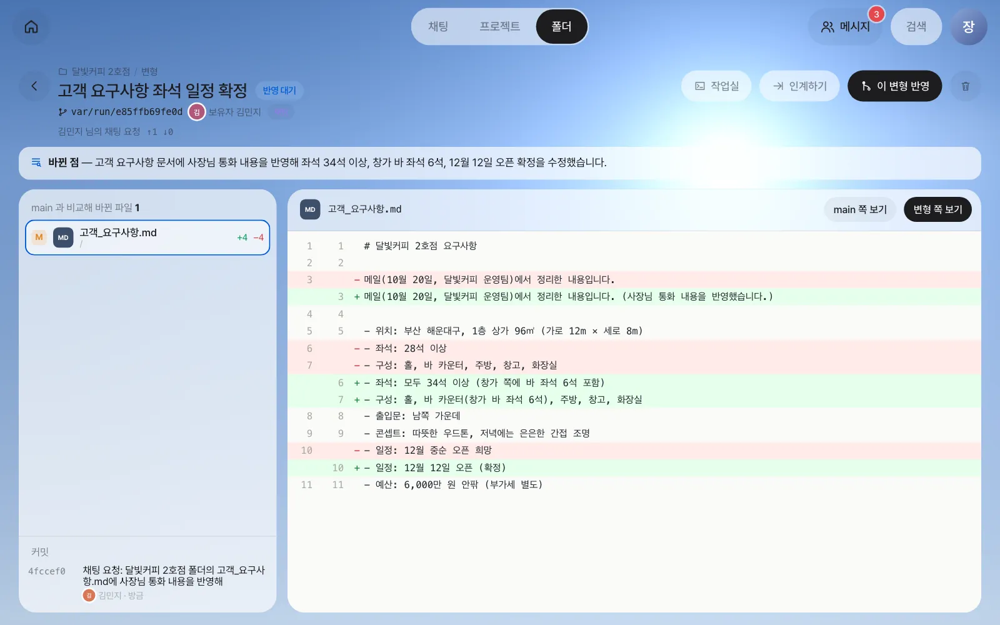
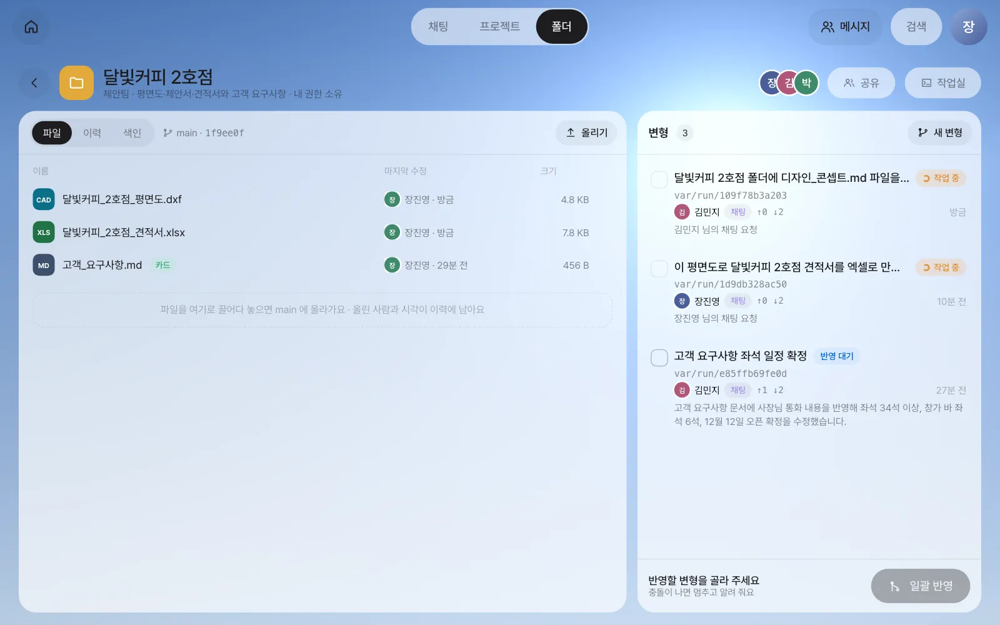
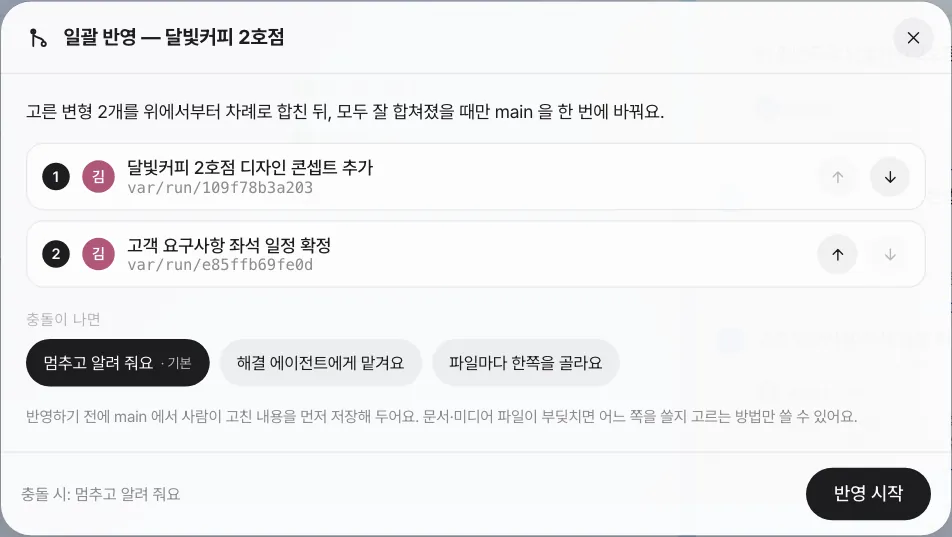
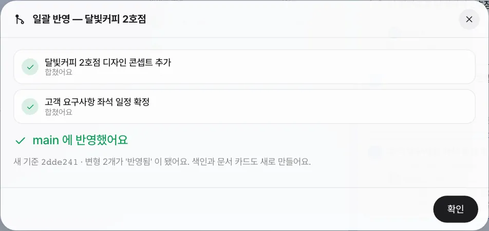
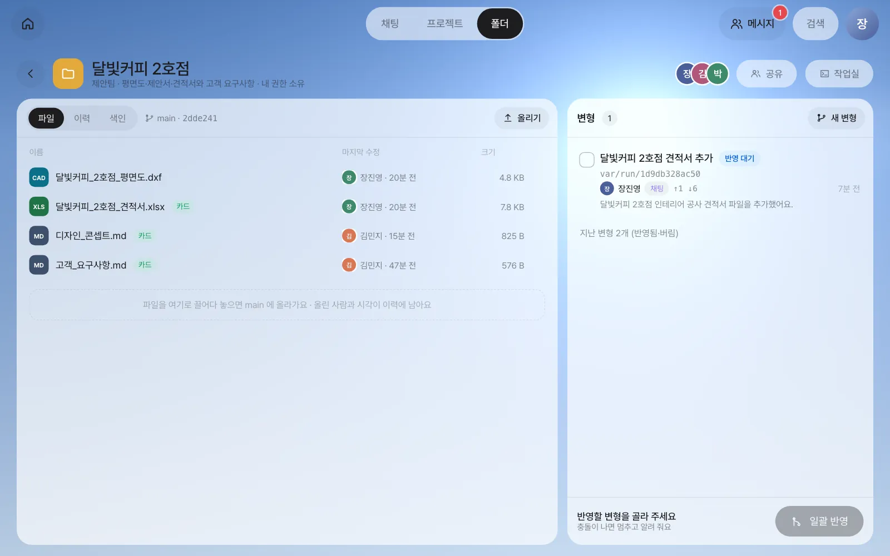
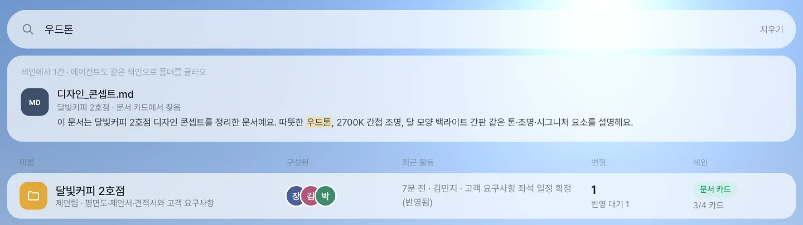
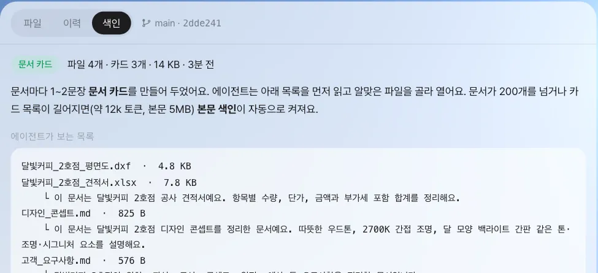

달빛커피 2호점의 평면도·견적서·요구사항을 팀 폴더에 모으고, 김민지와 박서연을 구성원으로 들입니다. 비서가 폴더의 문서를 고치면 원본(main)은 그대로 두고 변형에서 일하며, 장진영 팀장이 고른 변형만 한꺼번에 반영합니다.
왜 공유 폴더인가#
지금까지 산출물은 각자의 채팅 안에 있었습니다. 9장에서 비서가 만든 평면도와 견적서도 장진영 팀장의 채팅에만 있습니다. 12장의 패널 앱 데이터가 공유 폴더에 한 벌만 놓였듯이, 팀으로 일하기 시작하면 파일에도 세 가지가 필요해집니다.
- 한곳에 모으기 — 고객 한 건의 자료(평면도, 견적서, 요구사항 메모)를 드라이브처럼 한 폴더에 둡니다.
- 누가 무엇을 할 수 있는지 — 디자이너는 고칠 수 있고, 재무 담당은 보기만 합니다.
- 고친 것을 안전하게 합치기 — 사람이든 비서든 원본을 바로 덮어쓰지 않고, 고친 판을 따로 만든 뒤 사람이 골라 반영합니다.
Lite의 공유 폴더는 안쪽이 git 저장소입니다. 그래서 고친 이력이 모두 남고, 고친 판(변형)을 나란히 비교하고 골라 합칠 수 있습니다. git을 몰라도 됩니다. 화면에서는 “기준본(main)”과 “변형”만 보면 됩니다.
| 용어 | 뜻 |
|---|---|
| 기준본(main) | 지금 팀이 믿는 최신판. 파일 목록에 보이는 것이 main입니다 |
| 변형 | main에서 갈라져 나온 고친 판. 비서가 폴더 문서를 고치면 늘 변형에서 합니다 |
| 일괄 반영 | 고른 변형들을 차례로 합쳐 main을 한 번에 바꿉니다. 하나라도 부딪치면 멈추고 main은 그대로입니다 |
| 색인 | 폴더 안 문서마다 1~2문장 요약(문서 카드)을 만들어, 사람과 AI(비서·에이전트)가 찾을 때 씁니다 |
따라 하기 1 — 폴더 만들고 자료 올리기#
장진영 팀장 계정에서 합니다.
- 위쪽 「폴더」 탭을 누르고 「새 폴더」를 누릅니다.
- 이름
달빛커피 2호점, 설명제안팀 · 평면도·제안서·견적서와 고객 요구사항을 적고 「만들기」.

- 폴더가 열리면 「올리기」로 파일을 올립니다. 파일을 폴더 화면에 끌어다 놓아도 됩니다. 9장에서 만든
달빛커피 2호점 평면도.dxf와달빛커피 2호점 견적서.xlsx, 그리고 메일 내용을 정리한고객_요구사항.md를 올립니다(화면 사진에서는 파일 이름의 띄어쓰기를 밑줄로 바꿔 올렸습니다).
고객_요구사항.md의 내용은 이렇습니다. 메모장에서 만들어 올리면 됩니다.
# 달빛커피 2호점 요구사항
- 위치: 서울 성동구 성수동, 1층 상가 96㎡ (가로 12m × 세로 8m)
- 좌석: 28석 이상
- 구성: 홀, 바 카운터, 주방, 창고, 화장실
- 출입문: 남쪽 가운데
- 콘셉트: 따뜻한 우드톤, 저녁에는 은은한 간접 조명
- 일정: 12월 중순 오픈 희망
- 예산: 6,000만 원 안팎 (부가세 별도)
따라 하기 3의 화면 사진에는 위치가 다르게 적힌 요구사항이 보이지만, 여러분은 위 내용대로 쓰면 됩니다.
확인할 것: 파일 목록에 올린 파일이 보이고, 「마지막 수정」에 올린 사람과 시각이 남습니다. 잠시 뒤 문서 옆에 초록색 「카드」 표시가 붙습니다(색인).
따라 하기 2 — 구성원과 권한#
폴더 머리줄의 「공유」를 누르고, 「초대하기」에서 팀원과 권한을 골라 「초대」합니다.
| 권한 | 할 수 있는 일 | 실습 |
|---|---|---|
| 소유 | 구성원·폴더 관리, 반영 | 장진영 |
| 편집 | main에 올리기, 변형 반영 | 김민지 |
| 실행 | 변형 만들기, 에이전트 실행 | — |
| 보기 | 보기·내려받기 | 박서연 |

권한은 보기 ⊂ 실행 ⊂ 편집 ⊂ 소유 순으로 넓어집니다. 박서연(보기)은 파일을 열고 내려받을 수 있지만 올리거나 변형을 만들 수는 없습니다.
따라 하기 3 — 비서에게 폴더 문서를 고치게 하기#
김민지가 달빛커피 사장님과 통화한 내용을 요구사항에 반영하려 합니다. 김민지 계정의 채팅에서 폴더 이름과 파일 이름을 넣어 부탁합니다.
달빛커피 2호점 폴더의 고객_요구사항.md에 사장님 통화 내용을 반영해 줘: 창가 쪽에 바 좌석 6석을 두고, 좌석은 모두 34석 이상으로. 오픈은 12월 12일로 확정.
비서는 이 폴더를 찾아 변형을 하나 만들고, 그 안에서만 고칩니다. 실습에서는 약 1분 걸렸습니다. 채팅에는 고친 내용 요약과 함께 「달빛커피 2호점 · 새 변형」 카드가 남습니다. 카드를 누르면 main과 비교한 화면이 열립니다.

확인할 것
- 폴더 오른쪽 「변형」 목록에 새 변형이 「반영 대기」로 있습니다. 보유자는 김민지, 출처는 「채팅」입니다.
- 파일 목록(main)의
고객_요구사항.md는 아직 예전 내용 그대로입니다.
같은 방법으로 김민지가 하나 더 부탁합니다(달빛커피 2호점 폴더에 디자인_콘셉트.md 파일을 새로 만들어 줘. 내용: 따뜻한 우드톤…). 변형이 또 하나 생깁니다.

채팅 요청이 폴더에서 일할 때
부탁 속에 폴더의 문서가 근거로 쓰이면, 비서는 그 폴더의 변형에서 일합니다. 실습에서 장진영 팀장이 채팅으로 “이 평면도로 견적서를 만들어 줘”라고 했을 때도 비서가 폴더의 평면도를 읽으며 달빛커피 2호점 견적서 추가 변형을 남겼습니다. 이렇게 생긴 변형도 사람이 반영하기 전까지는 main을 바꾸지 않습니다.
따라 하기 4 — 고른 변형만 일괄 반영#
장진영 팀장 계정에서 폴더를 엽니다.
- 반영할 변형 왼쪽의 네모를 눌러 고릅니다. 김민지의 두 변형을 고르세요.
- 아래 「일괄 반영」을 누릅니다. 합칠 순서와 충돌이 났을 때의 처리를 고르는 창이 뜹니다.

| 충돌이 나면 | 동작 |
|---|---|
| 멈추고 알려 줘요(기본) | 부딪친 파일과 줄을 보여 주고 멈춥니다. main은 그대로입니다 |
| 해결 에이전트에게 맡겨요 | 에이전트가 두 쪽을 읽고 합친 판을 만듭니다 |
| 파일마다 한쪽을 골라요 | 파일마다 main 쪽과 변형 쪽 중 하나를 고릅니다. 한글·엑셀 같은 문서와 그림은 줄 단위로 합칠 수 없어서 이 방법만 쓸 수 있습니다 |
- 「반영 시작」을 누릅니다.

확인할 것: 파일 목록에 디자인_콘셉트.md가 생기고, 고객_요구사항.md의 「마지막 수정」이 김민지로 바뀝니다. 「이력」 탭에서 누가 언제 무엇을 반영했는지 볼 수 있습니다. 반영한 변형은 「지난 변형」으로 접힙니다.

따라 하기 5 — 색인으로 찾기#
폴더 목록 화면 위의 찾기 칸에 우드톤을 칩니다.

색인은 폴더가 커질수록 단계가 올라갑니다.
| 단계 | 언제 | 무엇으로 찾나 |
|---|---|---|
| 파일 목록 | 늘 | 폴더 이름, 파일 경로 |
| 문서 카드 | 문서마다(올리거나 반영할 때) | 1~2문장 요약과 핵심어 |
| 본문 색인 | 문서가 200개를 넘거나 카드 요약·본문이 많아지면(카드 약 12k 토큰, 본문 5MB) 자동 | 문서 본문 |
폴더의 「색인」 탭에서 에이전트가 보는 목록(파일과 카드 요약)을 그대로 볼 수 있습니다.

더 해 볼 것#
| 기능 | 어디서 |
|---|---|
| 변형을 사람·에이전트에게 넘기기 | 변형 화면 「인계하기」 — 그대로 이어받기, 또는 지금 시점에서 새 갈래 만들기 |
| 변형을 직접 고치기 | 변형 화면 「작업실」 — 파일과 터미널(23장) |
| 변형 버리기 | 변형 화면 오른쪽 위 휴지통 — 버린 변형도 보존 기간 동안은 남습니다 |
| 이미 있는 git 저장소 연결 | 폴더 목록 「저장소 연결」 — 저장소 안 내용은 바꾸지 않고 목록만 보여 줍니다 |
다음 장에서는 폴더에 넣기 전 단계, 즉 채팅의 산출물을 팀원 한 사람에게 바로 건네는 공유와 @멘션을 봅니다(14장).
확인 문제
- 박서연 계정으로 폴더를 열어 보세요. 「올리기」와 「새 변형」이 보이나요? 왜 그런가요?
- 김민지의 변형 하나를 반영하기 전에 장진영 팀장이 같은 줄을 main에서 직접 고쳐 올렸다면, 「멈추고 알려 줘요」로 반영할 때 어떻게 되나요?
- 폴더 찾기에서
부가세를 치면 어떤 파일이 나오나요? 그 파일의 어디에서 찾은 것인가요?
답
- 보이지 않습니다. 박서연은 「보기」 권한이라 열고 내려받기만 할 수 있습니다. 올리기는 편집 이상, 변형 만들기는 실행 이상입니다.
- 그 파일에서 충돌이 나 반영이 멈춥니다. 어떤 파일의 어느 줄이 양쪽에서 다르게 고쳐졌는지 보여 주고, main은 그대로입니다. 그만두거나, 한쪽을 고르거나, 해결 에이전트에게 맡길 수 있습니다.
달빛커피 2호점 견적서.xlsx가 나옵니다. 엑셀 파일 이름에는 “부가세”가 없지만, 문서 카드 요약(“…부가세 포함 합계를 정리해요”)에서 찾았습니다.